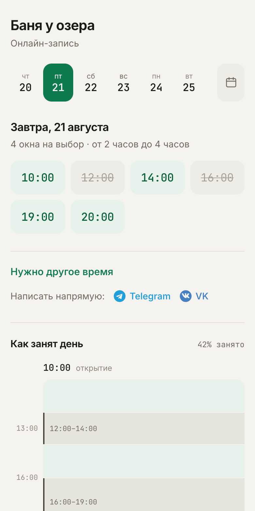
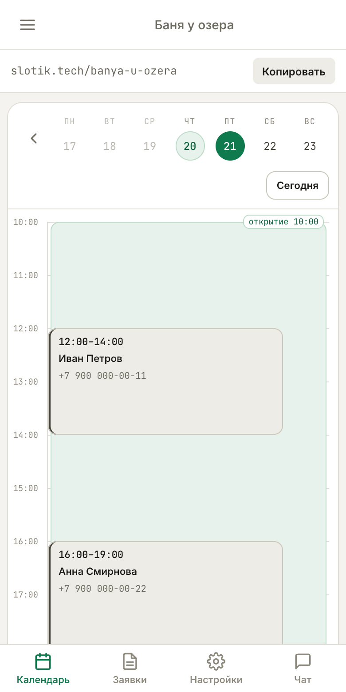

Клиент видит свободное время
День разбит на сеансы — 30 минут, час, два, сколько нужно вам. Занятое не показывается. Клиент нажимает свободный слот, оставляет имя и телефон — бронь у вас. Круглосуточно, без вашего участия.
Без абонплаты на этапе запуска
Он видит свободные слоты, выбирает время и оставляет имя с телефоном. Вам приходит бронь. Никто никому не звонит и не переписывается по ночам.
2 минуты: название, часы работы, готовая ссылка. Без карты и договоров.

Сервис молодой: мы запускаемся и набираем первых клиентов. Поэтому бесплатно и поэтому отвечаем на сообщения лично. Не верьте на слово — откройте демо и посмотрите, что увидит ваш клиент.
Что такое slotik
Мы не пытаемся заменить вам бухгалтерию и аналитику. Slotik решает одну задачу — чтобы клиенты легко записывались, а вы не теряли брони.
Электронная тетрадь для записей — только удобнее
Как это работает
Клиенту — свободные слоты и две минуты на бронь. Вам — календарь, который видно с телефона.
День разбит на сеансы — 30 минут, час, два, сколько нужно вам. Занятое не показывается. Клиент нажимает свободный слот, оставляет имя и телефон — бронь у вас. Круглосуточно, без вашего участия.
Все брони с именами и телефонами на одном экране. Работает на телефоне, планшете и компьютере — устанавливать нечего. Записи от звонков добавляете сами, они встают в то же расписание.
Каждое заведение получает свой адрес вида slotik.tech/ваше-название. Ставьте в Авито, в описание профиля, в WhatsApp — вместо «напишите, уточню и отвечу».
Не нашлось подходящего слота — клиент предлагает своё время и оставляет телефон. Вы видите заявку в панели и подтверждаете или предлагаете другое. Клиент не уходит к соседям.
Как только время занято — оно исчезает у всех остальных. Если двое нажали один слот одновременно, второй получит понятное «это время только что заняли» и выберет другое.
Звонки, WhatsApp, личные сообщения — всё как было. Slotik добавляет ещё один канал, которым клиенты пользуются сами. Телефоны клиентов видите только вы: на публичной странице их нет.
Интерфейс
Слева — то, что видит клиент по вашей ссылке: свободные слоты, которые можно нажать. Справа — ваш календарь с бронями.

Быстрый старт
Ничего устанавливать не нужно. Три шага — и клиенты могут бронировать.
Email и пароль — 30 секунд. Без подтверждений по телефону и анкет.
Название заведения, часы работы и длительность сеанса. Сервис сам разложит это на слоты на месяц вперёд.
Ссылка готова сразу — с кнопками «поделиться» в WhatsApp и Telegram. С этого момента клиенты бронируют сами.
Частые вопросы
Большинству проще открыть ссылку и нажать свободное время, чем дозваниваться — особенно вечером и в выходные, когда вы заняты. Тем, кто привык звонить, ничего не мешает позвонить: такие записи вы добавляете сами через панель, и они встают в то же расписание.
Календарь с датами, где есть свободное время, и список свободных интервалов на выбранный день — например «14:00 до 16:00». Занятое время не показывается вообще. Имён и телефонов других клиентов на публичной странице нет.
Забронирует тот, кто нажал первым. Второй сразу увидит «это время только что заняли» и выберет другое. Двойных броней быть не может.
Сейчас ничего. Мы на этапе запуска и набираем первых клиентов, поэтому все функции открыты бесплатно. Платные тарифы появятся позже, и мы предупредим заранее — задним числом ничего не отключим.
Около двух минут. Регистрация, название заведения, часы работы и длительность сеанса — дальше сервис сам публикует расписание на месяц вперёд и выдаёт готовую ссылку. Устанавливать ничего не нужно.
Он нажимает «Нужно другое время», указывает удобное ему время и телефон. Заявка приходит вам в панель — вы подтверждаете её или предлагаете другое время. Так клиент не уходит, даже когда нужного слота нет.
Бронь сразу появляется в календаре, а заявки — во вкладке «Заявки» со счётчиком. Если привязать Telegram или VK, уведомления придут в мессенджер. Для аккаунтов без мессенджера мы отправляем письмо на email.
Нет. Подходит всему, что сдаётся или бронируется по времени: бани и глемпинги, беседки и шале, корты и залы, квесты, прокат, фотостудии, мастерские, коворкинги.
Клиент даёт согласие галочкой в форме, данные видны только вам после входа в панель и удаляются автоматически через 30 дней после даты записи. Подробности — в политике обработки персональных данных.
От автора
Не хватает какой-то функции под ваш формат? Напишите мне в Telegram — расскажу, что сервис уже умеет, и доработаю под вас.
Название, часы работы, длительность сеанса — и ссылка, которую можно отправить клиентам сегодня же.
Открыть запись — бесплатно